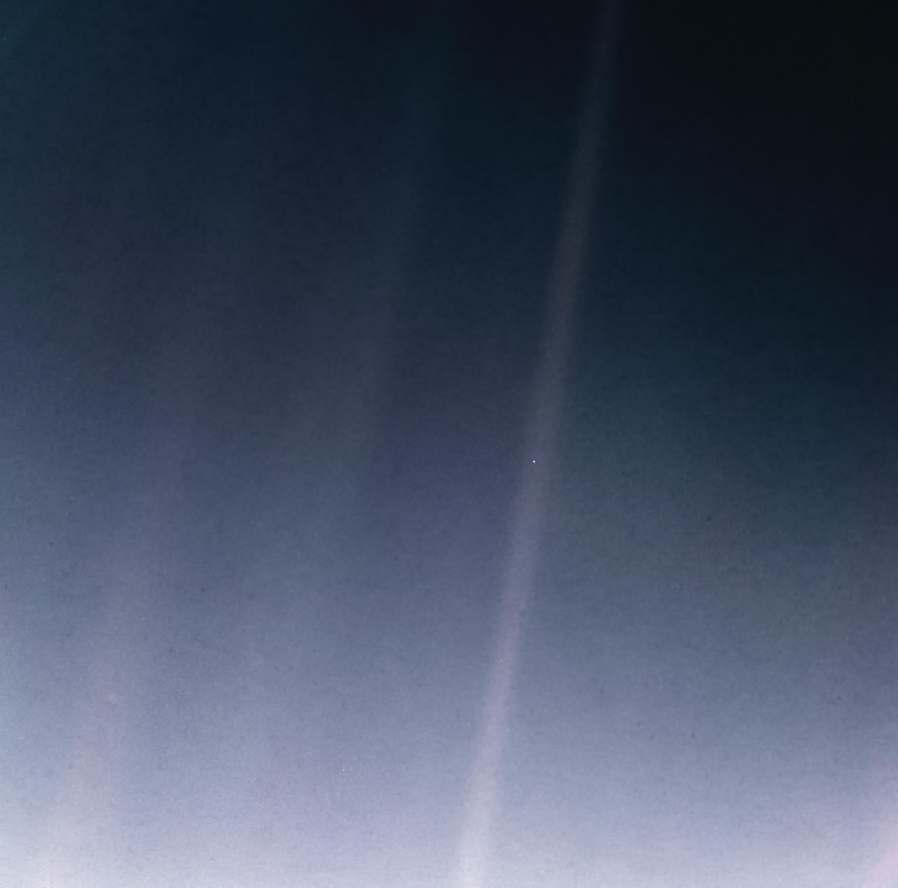

この美しい世界を楽しむために 生まれてきた、すべての人へ。
Kids Club星の子
放課後って、
誰の時間？
放課後は、
子ども達の大切な自由時間。
学校が終わったら、
次も大人に決められた予定を
こなすんじゃなくて、
今日は何する？
それを自分で考えられる時間。
自分で選ぶ。 自分で決める。
- 「これやってみたい！」
- 「今日はこれがしたい！」
- 「やっぱりやめる！」
だって、自分で決めていい。
この世界は、おもしろいことでいっぱい。
「やってみたい！」が
叶う場所。
科学も、アートも、編み物も、
料理も、外遊びも、虫も、工作も。
- 科学
- アート
- 編み物
- 料理
- 外遊び
- 虫
- 工作
好きなものを見つける。
夢中になれるものに出会う。
好奇心の種をまく心が動く体験を
★活動の内容は変わることがございます。季節や子ども達のやりたい気持ちで決めていきます！
Lessons & Holidays習い事と、長いお休み
好奇心の種をまく好きなことをとことん好きを見つけて育てるお手伝い
習い事もできます
剣道・居合道科学実験教室オンライン授業ピアノギター
※別途費用がかかります。日時の詳細は応募状況で変わります。
夏休み・長いお休み
学校休業日等は 8:00〜19:30。長期休みのみのご利用も可能です（ご予約制）。
遠足や探究に出かけることも多々あります。
- いっぱい
遊ぶ。 - 失敗する。
- もう一度
やってみる。 - 考える。
その全部が、
生きる力になる。
一人ひとり違っていい。
みんな大切なひとり。
認めてもらう経験が、
自信につながる。
失敗してもいい。
やり直してもいい。
困ったら「助けて」って言っていい。
Staffスタッフ紹介
- 写真
【お名前】
【ひとことメッセージ】
- 写真
【お名前】
【ひとことメッセージ】
今日も最高に楽しかった！
子どもだけじゃない。
お母さんも、お父さんも、
今を楽しんでほしい。
Informationご利用案内
- 平日
- 8:30〜19:30
- 学校休業日等
- 8:00〜19:30ご利用の際は事前予約をお願いいたします
- お迎え
- 美園北小学校のみ（1年生〜3年生）授業終了時間から可能です
- 4年生以上
- 6時間授業の日はお迎えではなく、1人または同じ星の子のお友達と星の子に向かいます
- 場所
- 〒336-0967
埼玉県さいたま市緑区美園3-6-29
料金表（税込み）
入会金
- 入会時¥10,000
月額
- 週5回まで¥23,000
- 週3回まで¥20,000
- 土日祝+¥3,300/日
15時のおやつ込み
スポット利用
- 1時間¥1,100
- 土日祝+¥3,300/日
おやつ1回 ¥330 別途
長期休みのみ
- 夏休み¥33,000（予定）
- 冬休み¥21,000（予定）
- 春休み¥25,300（予定）
- 土日祝+¥3,300/日
15時のおやつ込み
- 年度初回のみ、保険料 ¥1,000 が別途かかります（月額・スポット利用・長期休みのみ 共通）
- 給食の注文：低学年用 ¥480／高学年用 ¥560 × 回数（アレルギー除去・内容により料金が変わることがございます）
- イベント開催時：無料イベントは、ご参加の場合イベント時間内で無料でお預かりします。有料イベントは、ご参加の場合その都度料金がかかります（イベント時間内でのお預かり）
ご利用にあたって（ご予約・お休み・保険など）
- ご予約
- 1週間/月毎等ご協力くださいますようお願いいたします。急な場合、可能な限り対応させていただきます。
- スポット利用
- ご利用の際はLINE登録をお願いいたします。体調不良や機嫌にご留意ください。初めての方は書類の記入や説明などがございます（お手続きに15分程度のお時間をいただきます）。
- 長期休みのみのご利用
- 長期休みのみのご利用も可能です。ご予約制です。
- 学校休業日等
- ご利用の際は事前予約をお願いいたします。遠足やイベント等でご希望に添えない場合はご了承ください。
- 送迎
- 長期休み・時間外・休日等は、星の子まで直接送迎をお願いいたします。
- 遠足・探究day
- 遠足や探究に出かけることが多々あります。その際の交通費・おやつ代・ランチ代等は別途になります。事前にご参加の可否と料金等をお知らせします。
- 繰り越し・振替
- 繰り越し・振替制度はございません。体調不良等でお休みの場合も返金致しかねます。長期の場合は工作グッズのお渡し等でご了承ください。万が一感染症の発生等で星の子が閉鎖になった場合は、日割り/月額で返金対応いたします。
- 保険
- 公益社団法人スポーツ安全協会となります。加入は必須です。資料のご確認をお願いいたします。
- 学校へ行けないとき
- 不登校など学校へ行けない場合も対応いたします。ご相談ください（別途料金がかかる場合がございます）。
ご利用・ご相談はこちらから
※公式LINEのボタンのリンク先は要確認
子ども達がいつか大人になっても、
「この世界って面白い！」
「生きるって楽しい！」
そう思いながら、
自分の人生を歩んでいってほしい。

ここに、
私たちがいる。
Pale Blue Dot
1990.2.14 Voyager 1
この小さな地球で、
たくさんの出会いと体験を。
そして、これからもずっと——
この美しい世界を楽しむために
生まれてきた、すべての人へ。
Kids Club星の子
Kids Club 星の子 を運営する
PALE BLUE DOT
「ペイル・ブルー・ドット」写真：NASA/JPL-Caltech（1990年2月14日 ボイジャー1号撮影／2020年 再処理版）
当サイトは、NASAの推薦・提携を受けたものではありません。 © PALE BLUE DOT